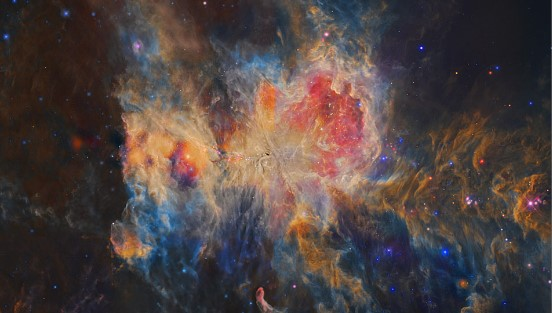

January 15th 2015
Astronomer's Explanation: The Great Nebula in Orion is an intriguing place. Visible to the unaided eye, it appears as a small fuzzy patch in the constellation of Orion. But this image, an illusory-color four-panel mosaic taken in different bands of infrared light with the Earth orbiting WISE observatory, shows the Orion Nebula to be a bustling neighborhood of recently formed stars, hot gas, and dark dust. The power behind much of the Orion Nebula (M42) is the stars of the Trapezium star cluster, seen near the center of the above wide field image. The orange glow surrounding the bright stars pictured here is their own starlight reflected by intricate dust filaments that cover much of the region. The current Orion Nebula cloud complex, which includes the Horsehead Nebula, will slowly disperse over the next 100,000 years.